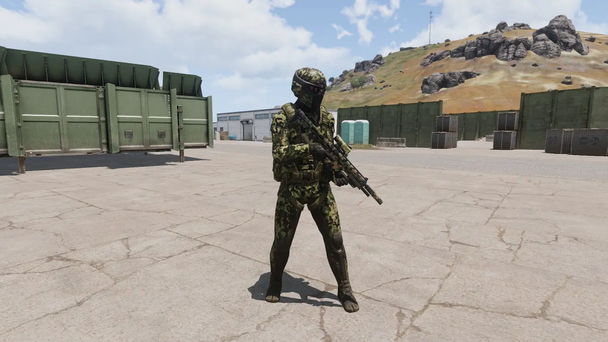

隶属于中国，装备跨时代装备的特种部队，规模不详，队员全部为中国人，主要负责东风设备的保护，运送，运作。
单兵装备：
（1）特殊用途套装：集全息夜视功能，全息单兵黑热成像功能于一体的全覆盖式五级防弹头盔，为作战人员的头部提供全方位保护，自带卓越防弹性能的作战服，符合人体工程学的装束大容量背包(自带静距离标记功能，在热成像隐身中能迅速分辨敌友)，所有装备屏蔽红外线，使士兵在热成像中完全隐身。
（2）115型步枪：Viper的标准步枪，无枪托式设计，由两个独立系统组成，主枪发射6.5mm无壳弹，下挂式发射器发射0.5（12.7mm）无壳弹，装备隐形消音器，使枪口温度稳定在较低温度，降低被热成像发现的可能性。